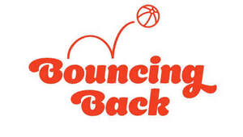

Trade Mark Journal No.2026/005 30 January 2026
UK00004320435 7 January 2026 (16,36,41,44)

- Class 16
- Printed materials; promotional and advertising material; teaching and instructional materials; educational material; informational, teaching, educational and instructional materials relating to charitable fund raising, organising charitable fund raising events and matters concerning children and young people and their parents; office requisites; books, booklets, leaflets, flyers, magazines, periodical publications, comics, newsletters, puzzle books, fact sheets, hand books; postcards; cards; greeting cards; paper; plastic bags; paper bags; gift wrap; paper tablecloths; mats; coasters; folders; binders; calendars; posters; display banners of paper; photographs; diaries; files; bookmarks; badges of card or paper; stationery; school supplies; pens, felt tip pens, markers, pencils, pencil cases, erasers, crayons, pastels; artists’ materials; paint brushes; decalcomanias; stickers; certificates; fundraising packs being printed matter; sponsorship forms.
- Class 36
- Charitable fundraising services; charitable fundraising services for underprivileged children; management and monitoring of charitable funds; organising of charitable fund raising; financial services; financial management advisory services; financial advice; trusteeship; charitable collections; sponsorship; advisory, consultancy and information services relating to the aforesaid services.
- Class 41
- Education, training and publishing services relating to psychological issues, medical issues, psychotherapy, Individual and group psychology, Mental health, Cognitive behaviour and stress; Education; training; parenting skills training; education in the field of parenting and parenting skills for carers, adopters and parents; educational information provided on-line from a computer database or the Internet; provision of coaching, training, education and advisory services and information in the field of infant behaviour, infant development, baby care, baby communication, fatherhood, motherhood, family relationships, fostering, adopting and parenting; provision of educational services through play groups; entertainment; sporting and recreational services; organising entertainment, recreation and sporting events; provision of play facilities for children; adventure playground services; provision of slides for recreational purposes; provision of soft play areas; providing recreational areas in the nature of play areas for children; provision of indoor climbing facilities; providing leisure and recreation facilities; leisure services; exercise and fitness classes; health and fitness training; publishing; publication of electronic books and journals on-line; providing on-line electronic publications (not downloadable); publication of multimedia material online; organisation of competitions (education or entertainment); organising of fund raising events; organising and participation in charitable fund raising activities and fund raising events; arrangement, performance and production of award ceremonies; presentation of awards for achievement; organising and hosting events relating to the granting of achievement awards; audio and video production, and photography; advisory, consultancy and information services relating to the aforesaid services.
- Class 44
- Human healthcare services; massage services; information relating to massage; mental health services; therapy services; medical counselling; health counselling; children's health and welfare services; art therapy; psychological therapy for infants, children and young adults; Psychological counselling; Medical counselling; Medical counselling services; Psychotherapy; Individual and group psychology services; Mental health services; Providing mental health rehabilitation facilities; Personality assessment services [mental health services]; Cognitive behavioral therapy (CBT); Medical counseling relating to stress; advisory, consultancy and information services relating to the aforesaid services.
Action for Children
Representative: Page, White & Farrer Limited